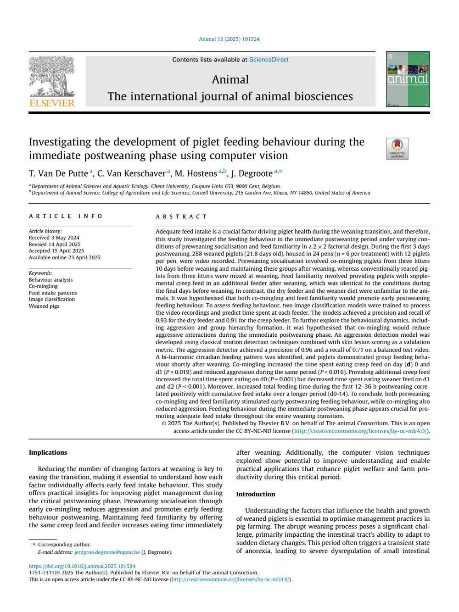

2026-06-09
Computer vision study on post-weaning feeding behaviour

Key takeaways
- Computer vision made it possible to quantify feeding behaviour during the first three days after weaning.
- Preweaning co-mingling stimulated early creep-feed use and reduced aggression during the immediate postweaning phase.
- Additional familiar creep feed increased total feeding time on the first day, but shifted feeding away from the weaner diet during the following days.
- Early feeding time was positively related to feed intake over the broader weaning transition.
